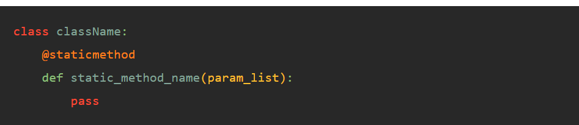

Article 1
Pylint
Pylint is a source-code, bug and quality checker for the Python programming language. It is named following a common convention in Python of a "py" prefix, and a nod to the C programming lint program. It follows the style recommended by PEP 8, the Python style guide. It is similar to Pychecker and Pyflakes, but includes the following features:
- Checking the length of each line
- Checking that variable names are well-formed according to the project's coding standard
- Checking that declared interfaces are truly implemented and much more
Getting Started
Installing Pylint is quite easy. Simply run the install command and it will install Pylint and all of the necessary dependencies. To install Pylint, run the following command: pip install pylint
Running Pylint
Pylint looks in a series of locations in order to find the configuration file. The first place it looks is the current working directory. This is the easiest way to ensure you're using the right configuration file. Return to your terminal program or command line. From the command line, navigate to the folder containing pylint_example.py and .pylintrc. Then, run the following command: pylint pylint_example.py
OOPS
Class, Objects and Method:

Class
a class describes the contents of the objects that belong to it.It describes an aggregate of data fields (called instance variables), and defines the operations (called methods).
Object
an object is an element (or instance) of a class; objects have the behaviors of their class. The object is the actual component of programs, while the class specifies how instances are created and how they behave.
Method
properties of the object are defined by the attributes and the behavior is defined using methods. These methods are defined inside a class. These methods are the reusable piece of code that can be invoked/called at any point in the program.
Constructor
Constructors are generally used for instantiating an object. The task of constructors is to initialize (assign values) to the data members of the class when an object of the class is created. In Python the __init__() method is called the constructor and is always called when an object is created.
- Default constructor: The default constructor is a simple constructor which doesn’t accept any arguments. Its definition has only one argument which is a reference to the instance being constructed.
- parameterized constructor: constructor with parameters is known as parameterized constructor. The parameterized constructor takes its first argument as a reference to the instance being constructed known as self and the rest of the arguments are provided by the programmer.

Fixture
Fixtures are functions, which will run before each test function to which it is applied. Fixtures are used to feed some data to the tests such as database connections, URLs to test and some sort of input data. Therefore, instead of running the same code for every test, we can attach fixture function to the tests and it will run and return the data to the test before executing each test.

Type Cast
Type casting is a method used to change the variables/ values declared in a certain data type into a different data type to match the operation required to be performed by the code snippet. In python, this feature can be accomplished by using constructor functions like int(), string(), float(), etc.
Static method
Unlike instance methods, static methods aren’t bound to an object. In other words, static methods cannot access and modify an object state. In addition, Python doesn’t implicitly pass the cls parameter (or the self parameter) to static methods. Therefore, static methods cannot access and modify the class’s state. To define a static method, you use the @staticmethod decorator:
To call a static method, you use this syntax: className.static_method_name()
Facade
Facade Method is a Structural Design pattern that provides a simpler unified interface to a more complex system. The word Facade means the face of a building or particularly an outer lying interface of a complex system, consists of several sub-systems. It is an essential part Gang of Four design patterns. It provides an easier way to access methods of the underlying systems by providing a single entry point.